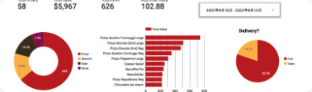
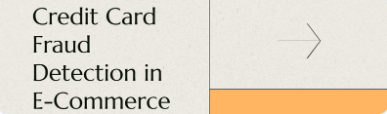

Cyclistics provide bike share service in Chicago. The executive of the company wants to maximize the profit by converting casual riders into members. So this project aims to find the pattern between two user types and how they use the service differently to design strategies

I designed a tailored relational database system to support the client in launching a new Pizzeria, also a dashboard that would enable client to closely monitor business performance

This project aims to analyze how the Space X falcon first stage rocket will land successfully or not, and predict the outcome, from the analysis we determined the cost of a launch, This information can be used if an alternate company wants to bid against SpaceX for a rocket launch.

Created ML and DL models that predict the trasaction as fraud or not fraud. Using undersampling technique with models of Neural Networks, Decision Tree, RandomForrest, SVM, resulting recall rate of 85%